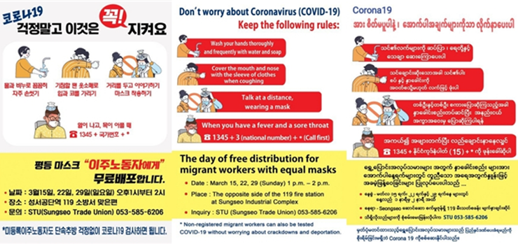
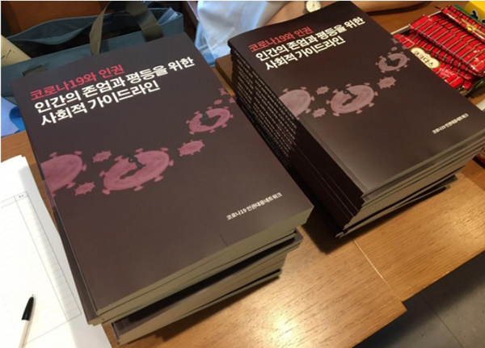
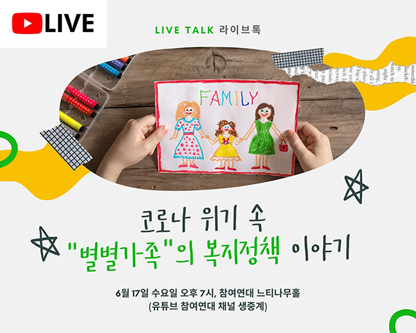
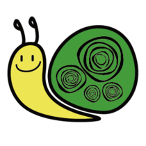
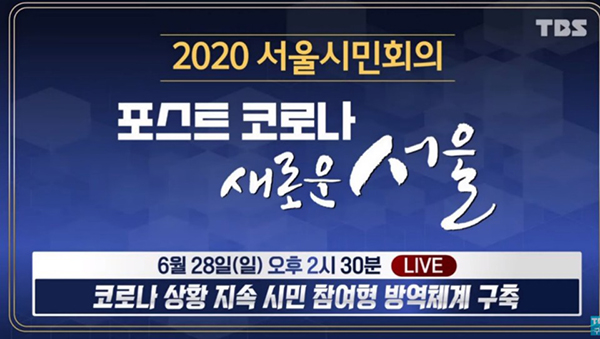

Post COVID-19: Private Sector Responses
Response #1. An Analysis of the Impact of COVID-19 on NPOs and
Alternatives
*NPOpia, **DongHang Activist Co-operative (“DongHang”), CCK, ChildFund
Korea, and the Beautiful Foundation analyzed the impact of COVID-19 on
non-profit organizations (NPOs) and are currently discussing collective
countermeasures. We will present two studies here: a survey of activists
conducted by DongHang and a survey of NPOs conducted by NPOpia.
*NPOpia: An organization that provides education programs, research
projects, and projects that provide spaces to create an environment for
NPOs to make practical contributions to the public interest.
**DongHang: An activist cooperative that supports the welfare of social
activists working in poor environments.
Case 1. DongHang
○ Project Name: Conference on Preparing Measures to Support Public Interest Activists During the COVID-19 Crisis○ Research Scope: 374 NPO activists
○ Research Area: Nationwide
○ Research Topics
1. Understanding the Situation of NPO Activists Amid the COVID-19
Crisis
2. Identifying the Support System that NPO Activists Need
1. Understanding the Situation of NPO Activists amid the COVID-19 Crisis
Responding activists stated that COVID-19 reduced group
activities (81.7%), created challenges due to the contactless work
environment (72.5%), and decreased funding (50%). The lower the
number of full-time workers, the more challenging it is to cope with
reduced activities, while the higher the number of full-time
workers, the more challenging it is to deal with COVID-related
changes in the working environment.
In terms of the impact on individuals, respondents found it hardest
to adapt to features of the contactless work environments, such as
the need to work predominantly online, (50.4%), followed by
increased stress due to the pandemic (41.5%) and financial
difficulties (27.3%). The stress was pointed out most by activists
in their 20s while those in their 40s found it harder than other age
groups to deal with challenges from the increased burden of taking
care of families and children.
2. Identifying the Support System that NPO Activists Need
The responding activists wanted the central and local
governments to establish a support system in response to reduced
donations to civic groups (51%), provide disaster income for
activists (42.1%), and provide emergency payroll subsidies (34.9%)
as ways to support civic groups.
As for ways to support individual activists, this involved central
and local governments providing livelihood support, such as lower
interest rates on loans or rental assistance (51.9%), providing
emergency loans for living expenses (35.9%), and providing education
on contactless work environments (34.2%). There was stronger demand
from those in their 20s for legal support for labor issues, such as
remedy for wrongful unpaid leave of absence while from those in
their 30s and 40s, the demand for more support for childcare and
other care services was more prominent.
Case 2. NPOpia
○ Project Name: Conference on Preparing Measures to Support Public Interest Activists During the COVID-19 Crisis○ Research Scope: NPO Leaders
○ Research Area: 117 organizations nationwide
○ Research Topics
1. The Impact of COVID-19 on NPOs and Current Situation
2. The Changes to and Response Expected in a Post-Coronavirus
Society
3. Implications
1. The Impact of COVID-19 on NPOs and Current Situation
NPOs have been constricted by the COVID-19 crisis.
- 90.6% of respondents stated that the crisis had reduced their
business activities from what had been planned while 6.8% answered
otherwise. Most NPOs have seen contraction.
CEOs were at the center of action in response to the crisis.
- CEOs led responses in 56.4% of the organizations, followed by
mid-level managers (24.8%), taskforces (8.5%), and boards of
directors (5.1%). In other words, the majority of organizations saw
their CEOs at the center in responding to this crisis.
New systems were implemented in response to the crisis.
New systems were implemented in response to the crisis.
- Some organizations implemented new working methods,
such as remote working and flexible work arrangements. Forty-one
percent applied these methods “for the entire period from the
beginning,” 25.6% applied “for two weeks or more but not the entire
period,” and 14.5% applied “for less than two weeks.” In other
words, many organizations adopted the new methods for a relatively
long period.
There was little financial support from the central/local governments during the crisis.
- 12.0% of the organizations answered they had received financial
support from the central and/or local governments during the crisis
while 84.6% said that there had been no special support.
2. The Changes to and Response Expected in a Post-Coronavirus Society
NPOs are aware that they need to be proactive in preparing for a post-crisis situation.
- According to the survey, the most urgent tasks that NPOs saw the
need to work on post-COVID-19 are “introduction of new working
methods” (53.0%) and “taking steps for financial stability” (46.2%).
The roles of NPOs are expected to broaden in the future, but it seems uncertain whether citizens will be favorable to NPOs.
- 46.2% of respondents said government control or intervention will
be “greater” in the future. 34.2% said there will be “not much
change” while 7.7% said it will be “weaker." This shows that a
little over four of ten respondents are concerned about future
control or intervention by the government.
- Regarding whether NPOs will enjoy the public’s trust and support
in the future, 32.5% responded that such trust and support will
“increase” while 29.9% said there will not be much change. However,
another 32.5% answered that it will “decrease,” presenting a mixed
outlook for the future.
NPOs feel the need to adjust the direction and content of their
projects according to the new environment even after the pandemic
ends.
It is expected that the methods of doing business, communicating
with others, and working will be more digital-based after the
pandemic, and this requires appropriately-trained human resources.
3. Implications
The role of NPOs is likely to increase in the future due to social
contraction, but the prospects for the favorable attitude of civil
society towards NPOs and for financial support are not so bright. In
particular, NPOs need to prepare for less financial support and work
on budget reallocation and fundraising efforts to prevent their
activities from decreasing.
In the new contactless era, it is inevitable that the methods of
doing business, communicating with others, and working will change.
At the center of this change lie digital technologies. NPOs should
be prepared to invest in manpower and address their changing
financial needs accordingly.
Small budget organizations, in particular, are expected to face
greater challenges in terms of manpower and funding, making it
necessary to consider providing technical support for such
organizations.
○ In addition, fundraising was conducted to help single moms and
female heads of households whose businesses are on the brink of
bankruptcy due to COVID-19 in Daegu
Response #2. Efforts to Protect Human Dignity and Equality during
the COVID-19 Crisis
Amidst the crisis, there is a movement to encourage people to listen
to the socially disadvantaged and minorities. Human rights
organizations have expressed concerns that at the time of mass
infection in the psychiatric ward of Cheongdo Daenam Hospital, the
issues related to those with mental illness were revealed, while
when a shortage of masks appeared, unregistered immigrants and
refugees were unable to buy masks, showing that their rights as
humans were not protected.
In this section, we would like to share the activities of the
COVID-19 Human Rights Response Network, formed by 21 human rights
groups in Korea.

Daegu Sungseo Industrial Complex Labor Union produced
posters and banners in 11 languages and put them up across
the complex towards preventing the spread of COVID-19.
Pictured are posters in Korean, English and Burmese. They
list the rules to follow, such as calling 1345 if feeling
sick or feverish and to test for COVID-19 without the need
to worry about being deported.
Information posters on COVID-19 for migrant workers made by Daegu Sungseo Industrial Complex Labor Union
Case 1. COVID-19 Human Rights Response Network
Twenty-one human rights groups in Korea formed the COVID-19 Human
Rights Response Network (“the Network”) and urged that the measures
taken in relation to COVID-19 should be planned around protection of
human rights.
For instance, the Network pointed out that when a mass infection
occurred and spread around those who visited Itaewon in May, some
media outlets highlighted that gay clubs were visited first by the
person who tested positive, and then disclosed his address and
workplace. The Network argued that the disclosure of personal
information to prevent the spread of the virus should be at an
absolute minimum. It suggested that the government and media focus
on factors that affect the spread of infectious disease rather than
the identity of or relationship between those who catch it. The
Network also criticized the current method of disclosing
chronological movements of people with COVID-19, suggesting that
places and times can be made into data and disclosed in a way that
prevents the exposure of personal information. It also calls for
improvements so that measures for public health and the right of
assembly can coexist.

Briefing session by the Network on social guidelines to ensure human dignity and equality.
Moreover, the Network pointed out that the government’s quarantine
measures blocked the voices of those who lost their jobs due to
COVID-19. It stated that the government failed to consider ways to
ensure the measures for public health and the right of assembly
coexist, and to guarantee and promote that right of assembly despite
COVID-19. It pointed out that demonstrations continue to happen in
other parts of the world including in Warsaw and Poznan, Poland,
where pro-life protesters held banners while keeping a distance of
two meters from each other. It then pointed out that there presently
exists no control against the possible abuse of authority over
quarantine measures and consequent violations of basic human rights.
The Network presented Social Guidelines to Ensure Human Dignity and
Equality amidst COVID-19, where it stated that the quarantine
process and prevention policies should be established in accordance
with three principles: (i) Respect for human rights based on human
dignity, (ii) No discrimination or special protection, and (iii)
Guarantee social communication and participation, and
decision-making.
Case 2. Forum for debate on ways the Emergency Disaster Relief Fund
centered around “normal families”
As COVID-19 spread, the government announced that it would
provide
an Emergency Disaster Relief Fund to “all households.” However,
did
everyone in fact receive it? The welfare system in Korea has
developed on the basis of families created through “married”
“heterosexual” and “male-centered” families “related by blood.”

Korean Women's Associations United, and Solidarity for LGBT Human Rights of Korea
A Talk about the Welfare Policy for “All Kinds of Families” Amidst the Crisis
Co-hosted by People’s Solidarity for Participatory Democracy, *Slug Union, Korean People's Solidarity Against Poverty,Korean Women's Associations United, and Solidarity for LGBT Human Rights of Korea

* Slug Union: Established in 2011 to guarantee youth
housing rights. It engages in a variety of
activities, such as those to improve the system for
housing-disadvantaged young people, counseling on
housing, and experimenting with “Snail House,” a
non-profit housing model.
Response #3. Efforts to Prepare for the Post-Pandemic
Period
Amidst the crisis, numerous lectures and discussion forums
appeared online, mostly through live streaming. The key subjects
discussed by civil society were a “Green New Deal,” basic income
and employment insurance. In this section, we will introduce two
cases that exhibit the efforts to prepare for a new era: (1)
“CAC Global Summit 2020 – Together We Stand”, an online
international conference organized by the Seoul Metropolitan
Government to overcome the crisis and prepare for the new era;
and (2) employment insurance for all, a job security agenda that
has emerged as the most urgent issue.
Case 1. CAC Global Summit 2020 – Together We Stand
Seoul Metropolitan Government held an online international
conference called “Cities Against COVID-19 Global Summit 2020”
(“CAC Global Summit 2020”) from Jun. 1 to 5, 2020 to overcome
the pandemic and prepare for a new era of major transformation.
About 120 people joined, including the mayors of various cities
around the world, world-class scholars, and experts in a variety
of fields, to engage in intense discussions. Upon the request of
cities around the world, Seoul opened an English online platform
to share its disinfection and quarantine policies and
experiences entitled the CAC (Cities Against COVID-19,
http://english.seoul.go.kr/covid) on Apr. 9, 2020. The website
surpassed 6 million views in just two months.

CAC Global Summit 2020 Official Website
(www.cac2020.or.kr)
| COVID-19 Special Fundraising Information related to the Summit | |
|---|---|
| CAC (English online platform sharing Seoul’s disinfection and quarantine policies and experiences) | http://english.seoul.go.kr/covid |
| Seoul’s official YouTube channel (in English) | https://www.youtube.com/seoulcityofficial |
At the “Discussion on Welfare” session of the Summit,
four presentations were given on the welfare sector
after the pandemic. As more people suffer from the
repercussion of COVID-19, including the decrease in
consumption and lack of jobs, (1) Seoul provided
“disaster emergency living expenses” for below-median
income families in a quick and simple process. As it was
found that this payment was spent mainly in
supermarkets, convenience stores, restaurants, and basic
living expenses, the city government’s action was deemed
effective. The city also learned that the number of
single- and two-person households is on the rise and
many of these households are financially vulnerable.
Based on this finding, it seems that a paradigm shift in
welfare policy is essential to reflect social changes.
In addition, (2) in terms of the response and efforts
related to COVID-19 by local community welfare
facilities, the public and private sectors have joined
hands to disinfect religious facilities, roads near
major subway stations and parks. Moreover, the city has
a special welfare project called “Beautiful Neighborhood
Stores,” where small local businesses, such as
restaurants, bathhouses, and hairdressers – a sector
whose income has decreased since the COVID-19 outbreak –
offer a variety of products and services to welfare
centers.
(3) Seoul also implemented a pilot project called “Care
SOS Center” with five districts to fill the gap in care
services. This will be implemented in all 25 districts
across the city. Lastly, (4) Lena Dominelli, Professor
of Social Work at University of Stirling in Scotland
gave a presentation entitled COVID-19: Green Social Work
Perspectives on the new roles of social welfare
practitioners. In it, Dominelli stated that COVID-19 has
confirmed that social welfare is closely connected to
the environment, and that she started thinking about the
ecological role of social welfare in the 70s and the
importance of taking a holistic view with local
authorities. As for the role of social workers, she
feels it is important for them to be able to provide
feedback on how to deal with situations based on
scientific understanding, in addition to their existing
roles. She concluded by saying that a sense of
citizenship in pursuit of the public good is what we
need at this time of pandemic, not personal greed.
Case 2. Employment Insurance for All
Disaster income has been introduced during the COVID-19
crisis. However, as the pandemic continues, a new discussion
has emerged on employment insurance for all. In fact, civil
organizations say this is not a new topic, but something
that has been needed for a long time.
As the economy has become sluggish due to the virus,
non-regular workers, small business owners, freelancers and
platform workers are all suffering. Despite the instability
of their position in the labor market, they are excluded
from social safety nets. Against this backdrop, civil
organizations understand that society needs a significantly
different approach and practice to provide an “unemployment
safety net” to all workers.
As national health insurance has expanded to cover the
entire population, it is only natural that employment
insurance should expand to cover all workers. It is all the
more necessary in Korea, where over 25% of workers are
self-employed. There is also a growing consensus that the
national employment insurance program should precede
implementation of a basic income program.

international@chest.or.kr
Community Chest of Korea, All Rights Reserved
Community Chest of Korea, All Rights Reserved